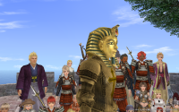
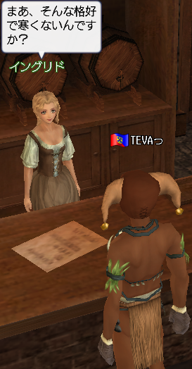
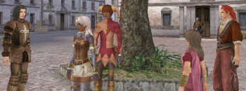
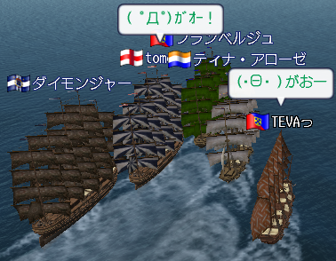
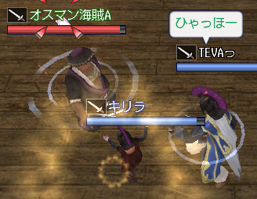
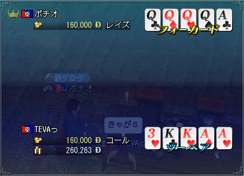
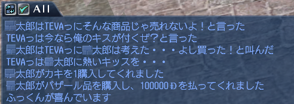
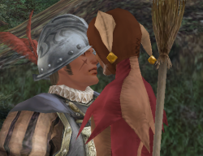
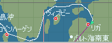
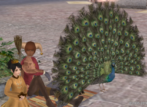

近藤さん引退陸戦大会がありました。
すっげーすっげー楽しかったのですが、今更内容は書けないので
詳細はマリアさんのBlogにて（
で、最後の記念撮影時に撮れた奇跡の一枚が、、これだ。

タイトル：修学旅行集合写真時前を通っちゃったツタンカーーメン
人間一人生きるのに、どれだけ金掛かるんだアホー！

どうもTEVAですこんばんは。
いよいよ23日に引越しです。
なんでもシンプルにやっていきたいものですが、生活必需品って結構な量がありますね。
今までなんでも身の回りに存在していたので、そういう当たり前の事も知りませんでしたわオホホ
さーこれからどうなるやら
さて、お気楽極楽地獄待ち→大航海。
順調に楽しく遊んでいます。
まずは一発目。
商会の皆様と、「ナツメースでもりもり儲けたいぞー！」ツアーを敢行いたしました。

集合場所はモチロン、いつもの伝説の木の下で！
アフリカが無法海域とかゆー怖い海だったので、皆で威嚇しながら突き進んでやりましたｗ

で、威嚇の甲斐あって無事アンボイナに到着！
フラさんの蝶高速船のおかげで、リス→アンボイナまで50日だぜ！ヒャッホー
帰りはともかさんに引っ張ってもらって、これまた無事に帰国！
売り場を求めてアッチにふらふらコッチにふらふら。
商人の大変なところですが、これがまた楽しい瞬間だったりするわけですな。うぇへへ
で、結局マラガで売り飛ばしました。
ポルトガル人のくせに。
関税？知らんがなそんなもん（
二発目。
非戦を解除してバリバリの海事erに育ちつつあるキリラさんと共に、オスマン海賊と戯れる！

、、、近い将来、素敵軍人になったキリラさんに
模擬やBCとかで牙を剥かれるんだろうなぁ、、楽しみだなぁ(´･∀･`)
三発目。
ポチさんにスッテンテンにされました

ギャー
このポーカーに4カードって存在していたのネーー！
一切勝てる気配も無く、10連敗に始まり最高20連敗ぐらいしましたヨーー！
所持金が真剣に0になったヨーー！
あまりにも驚きすぎて、俺、ちゃんと喋れてないヨーー！
ポチオ：「ではアピコメに「まだまだヒヨッコです」と書いてもらおうか＾＾」
ひぃぃ御無体なーー(;Θ;)
、、、ポチさんに文字通り毟り取られ、すっかりヒヨコと化した俺。
これからは隅っこの方でチュンチュン悲しげに鳴いて生きていきますよ、、、。
|ω;)ﾄﾞﾌﾞﾜ
四発目。
バザー放置中に、お友達がナイスエモを残してくれていましたｗ

寝ている間になんという情熱的な交渉が行われていたんだ！
ってゆーか商売の為とはいえ、、、
男にまでキスなどしてたまるかぁぁあヾ(`д´)ﾉ
お買い上げありがとうございますぅぅう(`д´;)>
しかし。このセンスは見習うべきだと思うんだ。
俺にはそう、圧倒的な独創性が無い。
彼の様なキリラと光るセンスを併せ持っていてこそ！決して埋もれる事の無い人材育成が
、、、なんの話だっけ（
五発目。
近頃、チルさんから頂いたピエロ服を普段着にしております。
そしてホウキを片手に辻斬りを行い、手を紅く染めております。
詳しい活動内容は、パンダさんのBlogを参照してください。
戦士の苦悩とダークサイドに堕ちるまでの過程が詳しく分析されております（
と、いうわけで、Flashでいい加減なスライドショーを作ってみた。
ピエロ神剣の真髄をとくと御覧あれ！！
|ω･)ほほい
どうもTEVAです。
えー、大航海、現実共に、ネタが一杯溜まっている！
明日、一気に更新するぜー
ふぉふぉ(･Θ･)
へーへー
こんにちはTEVAです。
随分更新間隔が開いてしまいましたが、生きています。
あ、2010年07月02日、内定もらいました。
そんなわけで、ちょっとバタバタしてたわけですね(言い訳
なんか通勤に2.5hもかかってしまうとの事で、はい。大阪での一人暮らしを考えております。
実はそっちのが楽しみだったりして(ｹﾞﾌｹﾞﾌ
さて大航海時代。

カリブ勅命をこなしてセコク国家貢献勲記を集める日々。
図は、物資配送先の役人にピエロのおいたんが喧嘩売ってる状態です（
いつだったか、北欧にて大投資戦が勃発しました。
実はこれまで投資戦というものに参加した事がなかったので
「Wow! これって勲記稼ぐ大チャンスじゃーん？」と、意気揚々。行く気満々でした。
しかし、対象港はリガ。
んだよっ EU圏の危険海域なのかよ！PKウジャウジャいるやーーん！ギャース
と、まーそんな感じでパニクりました。
俺は臆病商人ですからね。
以下の図の様にとんでもなく大回りしてリガへ突入してやりましたともさ。へっへ(･Θ･)
一応、自慢の軍用ジーベックで武装して、封鎖突破ー！（戦え

程なくして10Mの投資完了。手持ちが少なすぎて20M単位は選べませんでした（
まー勲記も一気に50枚手に入ったのでヨシ！バンジャーイ
さて、仕事始めまで暇だ。何すんべぇ。
というわけで。現在、大型二種免許取得中です（何
今回も教習所行きません。行ってやりません。
で、今日、学科受かった。
ヨユーじゃ。へっへ( ´;ﾟ ;ё;ﾟ ;)v
、、、俺は一体何を目指しているのだろうか（
まあそれは一旦置いておいて、、ともかさん。
ペットのクジャクちゃん、ほんとにデカイねｗ



{kind=link}